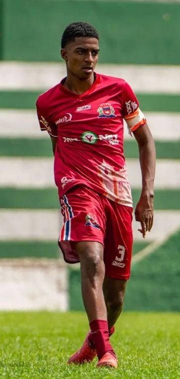

🚨 DESTAQUE • FUTEBOL DE BASE25 DE JULHO DE 2026
Arthur dá novo passo na carreira: da Seleção de Baixa Grande para o Fluminense de Feira Sub-15
O zagueiro Arthur, destaque da Seleção de Baixa Grande, está seguindo um novo capítulo na sua trajetória no futebol.
Depois de defender a Seleção de Baixa Grande, o jovem atleta passa a integrar a base do Fluminense de Feira Sub-15, onde continuará sua formação e terá novos desafios no futebol baiano.
É motivo de orgulho para Baixa Grande acompanhar um atleta formado no futebol da nossa cidade dando mais um passo em busca do sonho de se tornar jogador profissional. ⚽🔥
Da Seleção de Baixa Grande para novos desafios. Boa sorte, Arthur! A cidade está na torcida. ❤️⚽